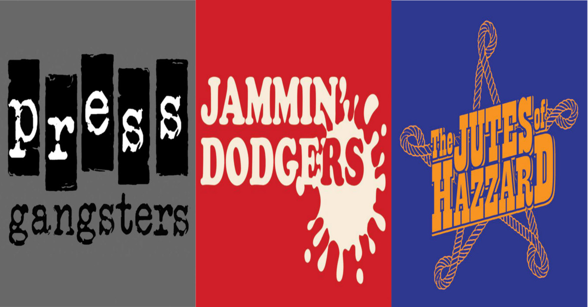

Dundee Home Teams Returns!
Dundee Roller Girls are shaking up their three year old home teams season with a round robin style tournament on the 5th of November.
Showcasing the skating talent from their brand new intake as well as the old veterans and favourites from the Silvery Tayzers and the Bonnie Colliders. We see three teams, Jutes of Hazzard, Jammin' Dodgers and Press Gangsters battle it out to be crowned the tournament winner! Each team representing aspects of Dundee life and history often summed up as jam, jute and journalism.
Home Teams for DRG is a chance for old and new skaters to have some fun on track while showing off their fancy moves and skills. A great day for all the family with fake mustaches, cakes, savoury treats, hook-a-duck, fancy feet and fun on skates!
Doors open at 11:30 with the action getting started at 11:45 with skate outs. Each team will play each other in three 30 minute rounds, with the final kicking off at 16:00.
Along side the tournament, DRG will be holding a Foodbank Collection for Dundee Foodbank run by the The Trussell Trust! So if you have anything you would like to donate, please bring it along. Check out their website for more information on what you can donate: https://dundee.foodbank.org.uk/
So come on down to the D.I.S.C in Dundee for some high action fun on skates! For more information check out the facebook page Home Teams Tournament 2016.